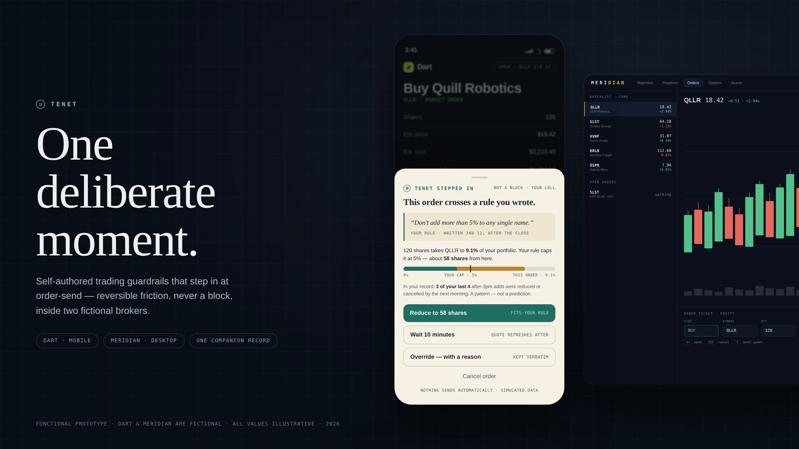
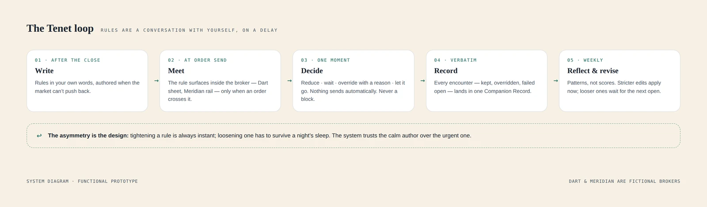
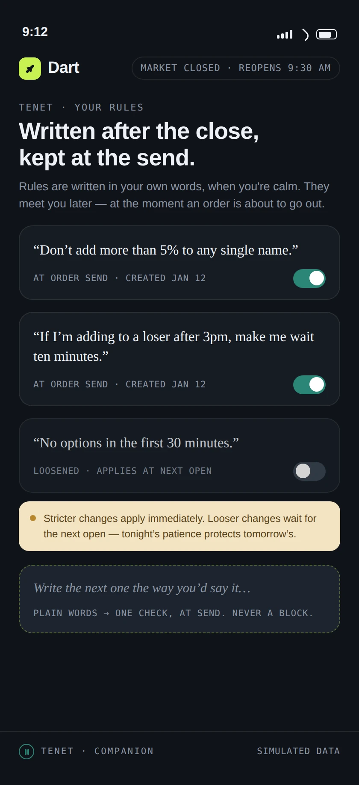
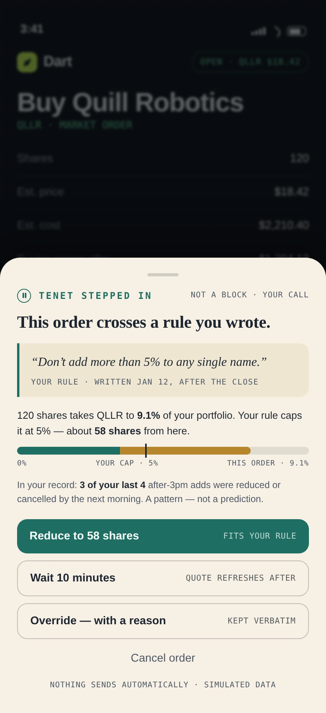
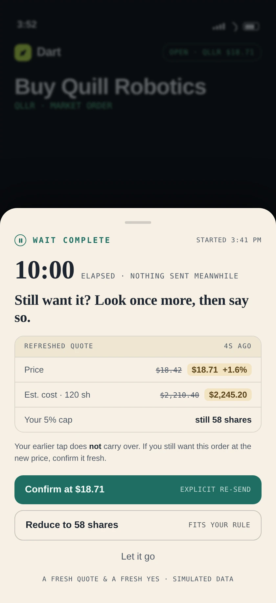
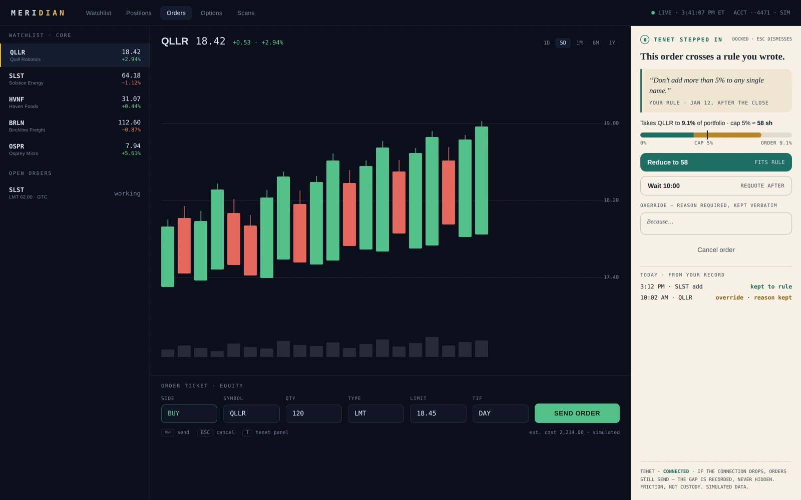
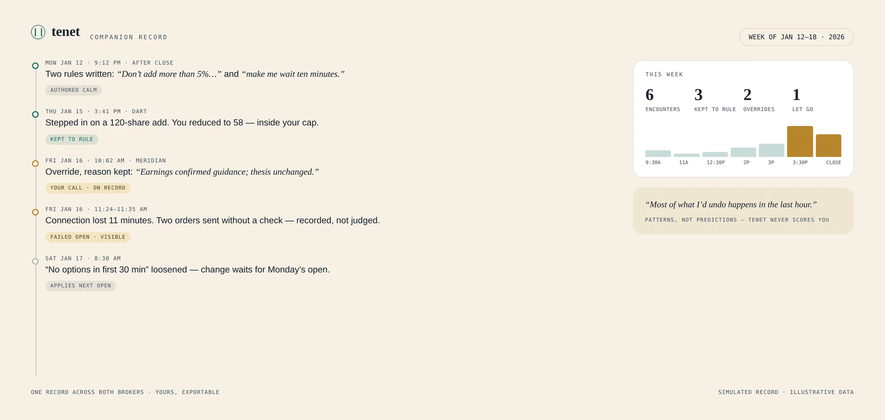

Self-authored trading guardrails that restore one deliberate moment before an impulsive order — without taking control away. Rules written after the close become reversible friction at order-send, inside two fictional brokers: Dart (mobile) and Meridian (desktop), backed by one Companion Record.
STATUSFunctional interactive prototype · not shipped
TEAM · YEARIndependent · 2026
BUILDHTML/CSS/JavaScript prototype, AI‑assisted with Claude Design and Fable
What it isRetail traders describe a specific regret: orders placed in a hot minute that they'd undo by morning. Tenet lets them write their own rules when calm — then meets them with those exact words at the one moment that matters: order-send.
The boundaryFriction, never a block. Tenet can slow an order, requote it, ask for a reason — but the send button always works and nothing sends automatically. If Tenet's connection drops, orders go through and the gap is recorded, not hidden.
StatusFunctional prototype · not shipped Two fictional broker hosts, one shared record. No user study has been completed; every number on the screens is illustrative.
HOW TO READ THIS PAGE — IMPLEMENTED a behavior that works in the prototype · SIMULATED illustrative prototype data · PROPOSED a plan, never a result. Dart and Meridian are fictional brokers. All quotes, fills, order histories, encounter counts, financial values, and performance figures are illustrative prototype data. A real broker SDK and trade-history import pipeline are future work. No user study has been completed.

THE SHAPE OF THE PROJECTHONEST NUMBERS ONLY
2
HOST ADAPTATIONS — MOBILE SHEET, DESKTOP RAIL
4
WAYS OUT OF EVERY INTERVENTION — ALL REVERSIBLE
0
USER STUDIES COMPLETED — VALIDATION PLAN BELOW
PRODUCT HYPOTHESIS
The moment of impulse and the moment of judgment are different moments. A trader at 9pm can describe exactly which orders they regret; a trader at 3:41pm with a moving price cannot hear that person. The hypothesis: if the calm version of you writes the rule in your own words, and the system replays those words at order-send — with a reversible way to proceed — more orders will match your own stated intent. That is a testable behavioral claim, and this page is explicit that it has not been tested yet.
THE ETHICAL BOUNDARY
Products in this space drift toward custody: lockouts, cooling-off jails, paternal copy. Tenet's hard line is drawn differently — it is friction, never a block, because a guardrail you can't override isn't a guardrail, it's a cage you'll tear down the first week it's wrong.
Every intervention has four ways out — reduce to rule size, wait, override with a reason, or cancel. All four are always available; none is hidden or shamed
The rules are yours, verbatim. Tenet never generates a rule, never edits your words, and quotes them back exactly as written — the authority in the moment is your own voice, not the product's
Failure fails open. If Tenet's connection drops, the broker keeps working and orders send unchecked — the gap lands in the record as a visible event, never silently
No scores, no streaks, no shame. The record shows patterns ("most of what I'd undo happens in the last hour"), not grades
THE SYSTEM LOOP
One loop, five verbs: write after the close → meet at order-send → decide in one moment → record verbatim → reflect weekly and revise. The asymmetry in the last step is the system's spine: stricter rule edits apply immediately; looser ones wait for the next open — tightening trusts the urgent you, loosening has to survive a night's sleep.

System diagramRules are a conversation with yourself, on a delay — the loop-back arrow is deliberately harder to traverse in the loosening direction.
WRITING RULES AFTER THE CLOSE
IMPLEMENTED Authoring lives in the quiet hours — the market-closed state isn't dead space, it's Tenet's home turf. Rules are written as plain sentences, not condition builders: the prototype's rule cards keep the user's phrasing and attach the trigger underneath. The composer's promise is the product's whole contract in one line: plain words → one check, at send — never a block.

Dart · after the closeRules in the author's own words. The third card is loosened — and visibly waiting for the next open to take effect.Why plain wordsA condition-builder UI would be more parseable — but the moment of intervention depends on the words feeling yours. "If I'm adding to a loser after 3pm, make me wait" lands differently than RULE_07: ADD_TO_LOSING_POSITION && TIME > 15:00. The trade-off is parsing ambiguity; the prototype constrains it with guided phrasing chips rather than exposing raw logic.
THE MOMENT AT ORDER-SEND
IMPLEMENTED When an order crosses a rule, Tenet steps in between tap and send: the sheet quotes the rule, shows exactly how far the order oversteps it (with honest geometry — the bar is to scale), and offers the four ways out. Choosing wait starts a cooldown; when it ends, the original tap does not carry over — the quote refreshes, changed values are highlighted, and sending requires an explicit fresh confirmation at the new price.

Stepped in · not blockedYour rule, your words, four ways out. The evidence line cites the user's own record — "a pattern, not a prediction."

After the waitA fresh quote and a fresh yes — nothing sent during the cooldown, nothing carries over after it.
ONE SYSTEM, TWO HOSTS
The intervention had to survive two opposite environments without becoming two products. Dart is a thumb-driven consumer app — Tenet arrives as a bottom sheet that owns the screen for one breath. Meridian is a dense pro terminal where a modal would be vandalism — Tenet docks as a persistent right rail that never covers the chart, answers to the keyboard (T toggles, ESC dismisses), and compresses the same anatomy: rule, to-scale context bar, four ways out, reason field inline.

Meridian · docked railSame anatomy, terminal manners: nothing floats over the chart, everything reachable from the keyboard, the fail-open contract stated in the rail's own footer.
Mobile: interruption is modal because attention is single-threaded — one sheet, one decision, then the app returns
Desktop: interruption is ambient because attention is spatial — the rail waits in peripheral vision and never steals the cursor
Both: identical rule text, identical four actions, identical record — the trust surface cannot fork
THREE DECISIONS THAT DEFINE IT
“Stepped in,” not “blocked.”
The headline verb was UX writing's biggest decision. "Blocked" makes the system the actor and the user the suspect; "stepped in" makes it a companion at your elbow, and the subhead confirms it: not a block · your call. Every downstream string inherits this stance — "let it go" instead of "abandon order," "kept to rule" instead of "complied."
Nothing sends automatically.
Tempting version: after the cooldown, auto-send the order if untouched — fewer taps. Rejected because it inverts the product's meaning: Tenet exists to insert a human moment, so every path to market must end in a fresh, explicit yes — including after a wait, at a refreshed quote, with changed values highlighted.
Evidence without false certainty.
The intervention cites the user's own history — "3 of your last 4 after-3pm adds were reduced or cancelled by morning" — and immediately disarms it: a pattern, not a prediction. No forecasted losses, no "you'll regret this," no probability theater. The strongest honest claim is the user's own behavior, quoted with the same verbatim respect as their rules.
ONE COMPANION RECORD
IMPLEMENTED Both hosts write to a single record — every encounter, every outcome, in the user's own vocabulary. Overrides keep the typed reason verbatim. The connection-loss event sits in the timeline with the same weight as everything else: "two orders sent without a check — recorded, not judged." The weekly view surfaces patterns (encounters cluster in the last hour) without ever grading the trader.

Companion Record · simulated weekKept, overridden, failed open — all first-class events. One record across both brokers, exportable, and never a score.
TRUST, FAILURE & ACCESSIBILITY
A product whose job is interrupting money movement earns trust through its worst moments, not its best ones:
Connection loss fails open, visibly. Tenet degrading must never degrade the brokerage. Orders send unchecked during an outage; the record shows the gap as an explicit event with its duration and what went through — hiding it would be the real betrayal
Stale-quote honesty. Post-cooldown, the sheet leads with what changed (price, cost) in highlight chips, keeps the old values visible struck-through, and re-anchors the decision on current numbers
Reasons are quoted, never paraphrased. The override field promises "kept verbatim" and the record honors it — the system that respects your words when you keep the rule must respect them when you break it
Accessibility, scoped to what the prototype implements: full keyboard paths on desktop (rail toggle, action focus order, ESC dismissal), focus-visible rings on all actions, non-color state signals (struck-through old values, “·” markers and text labels beside every colored chip), reduced-motion variant that swaps the sheet slide for a fade, and status-role announcements when Tenet steps in. No WCAG conformance is claimed — that requires an audit the prototype hasn't had
ITERATION NOTES
Three things the prototype taught by being built — each a change from an earlier working draft, not a hypothetical:
The first draft blocked. Its sheet had two buttons — "reduce" and "cancel" — and testing it on myself for a week of simulated sessions made the problem obvious: with no legitimate way through, the mental model becomes fight the sheet. Adding override-with-a-reason turned the adversary into a witness
The cooldown originally preserved the tap. Wait ended, order armed, one tap to send — which quietly converted "wait" into "delay then send." Decoupling the wait from the send (fresh quote, fresh confirmation) made waiting a genuine decision point instead of a snooze button
The desktop rail was born a modal. The first Meridian draft reused the mobile sheet as a centered dialog; over the chart it read as hostile within minutes. Docking it as a rail — present before the violation, persistent after — changed its character from alarm to instrument
LIMITATIONS & VALIDATION PLAN
PROPOSED What this project honestly is: a functional interactive prototype of a behavioral system, with fictional hosts and simulated data. What it is not yet:
No user study has been completed. The core claim — that self-authored friction changes send-moment behavior — is unvalidated. The plan: a two-week diary study with 8–10 active retail traders running the prototype against replayed personal scenarios, measuring reduce/wait/override/cancel distribution and self-reported regret, before any visual polish earns more investment
Dart and Meridian are fictional. Real integration means a broker SDK or an order-flow interception layer, plus a trade-history import pipeline to seed the record — both are future work and both carry real regulatory surface (order handling, advice boundaries) that would need counsel before a line of production code
The rule parser is staged. Plain-language rules in the prototype map to a small hand-built trigger set; the open question — how far natural phrasing can stretch before users need a structured editor — is a research question, not an engineering one
Single-user, single-week data shape. The record's patterns view is designed around one simulated week; longitudinal shape (rule churn, override drift, abandonment) is unmodeled
REFLECTION
The hardest design material here wasn't the screens — it was authority. Every draft that gave Tenet more of it made the product worse. The versions that worked all moved authority back to the user's own past words — and made the system merely the courier.